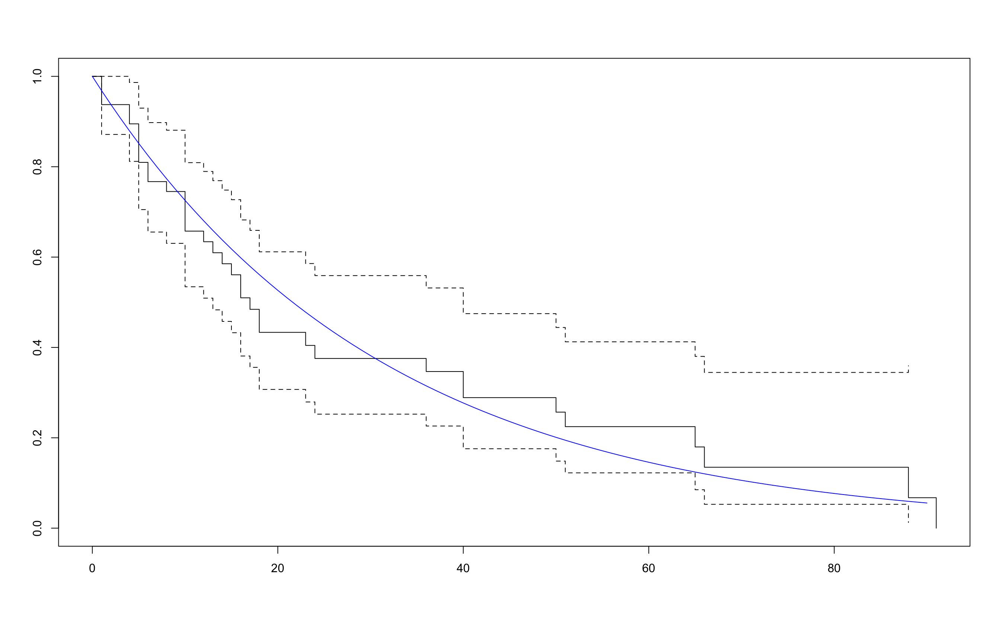
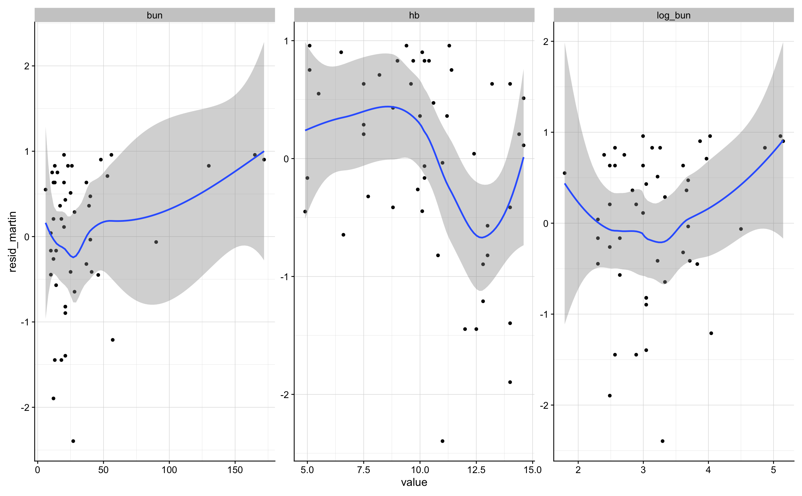

Chapter 3 The Cox Regression Model
3.1 Inngangur
Þessi kafli fjallar um Cox líkanið sem er aðhvarfsgreiningarlíkan. Við viljum færa okkur yfir í afhvarfsgreiningu til að meta áhrifsstærðir og til að geta leiðrétt fyrir skýribreytum (explanatory variables). Aðhvarfsgreining hefur þá möguleika umfram einföld próf til að bera saman hópa.
Log-rank prófið segir okkur bara að munur sé á lifun milli hópa en ekki hve mikill hann er. Hægt er að leiðrétta með því að gera stratified próf. En ekki hægt að leiðrétta fyrir samfelldum breytum.
3.2 Modeling the hazard function
Markmiðið er að búa til líkan fyrir hættuföllin þ.e. hazard föllin og lýsa hvernig bakgrunnsreytur hafa áhrif á þau. Tökum dæmi úr sýnidæmi 1.3 sem fjallar um lifun sjúklinga með multiple myeloma
Survival_of_multiple_myeloma_patients <- read.table("Data/Survival of multiple myeloma patients.dat",
header=T)
d_1_3 <- Survival_of_multiple_myeloma_patientsSkýribreyturnar þar eru:
## [1] "age" "sex" "bun" "ca" "hb" "pcells" "protein"Fyrstu línur eru:
## patient time status age sex bun ca hb pcells protein
## 1 1 13 1 66 1 25 10 14.6 18 1
## 2 2 52 0 66 1 13 11 12.0 100 0
## 3 3 6 1 53 2 15 13 11.4 33 1
## 4 4 40 1 69 1 10 10 10.2 30 1
## 5 5 10 1 65 1 20 10 13.2 66 0
## 6 6 7 0 57 2 12 8 9.9 45 0Í sýnidæmi 1.4 er borin saman lifun sjúklinga með blöðruhálskirtilskrabbamein eftir meðferð.
Comparison_of_two_treatments_for_prostatic_cancer <- read.table("Data/Comparison of two treatments for prostatic cancer.dat",header=T)
d_1_4 <- Comparison_of_two_treatments_for_prostatic_cancer
d_1_4 <- d_1_4 %>% mutate(treatmentf=factor(treatment))Meðferðin er treatment dálkurinn og fyrstu línur eru:
## patient treatment time status age shb size index treatmentf
## 1 1 1 65 0 67 13.4 34 8 1
## 2 2 2 61 0 60 14.6 4 10 2
## 3 3 2 60 0 77 15.6 3 8 2
## 4 4 1 58 0 64 16.2 6 9 1
## 5 5 2 51 0 65 14.1 21 9 2
## 6 6 1 51 0 61 13.5 8 8 13.2.1 A model for comparison of two groups
Byrjum á að bera saman tvo hópa og notum gögnin úr sýnidæmi 1.4. Meðferðirnar eru tvær:
##
## 1 2
## 18 20Við eigum alltaf að byrja á að meta fjölda atburða, eftirfylgnitíma og tíðni atburða á tímaeiningu.
## n d V lambda se.lambda
## 1 38 6 1890 0.003174603 0.001296026r <- d_1_4 %>% group_by(treatmentf) %>% summarise(n=n(),
d=sum(status),
V=sum(time),lambda=d/V,se.lambda=sqrt(d)/V)
r## # A tibble: 2 x 6
## treatmentf n d V lambda se.lambda
## <fct> <int> <int> <int> <dbl> <dbl>
## 1 1 18 5 821 0.00609 0.00272
## 2 2 20 1 1069 0.000935 0.000935Við sjáum að tíðni atburða er lægri fyrir meðferð tvö og hættuhlutfallið er
## [1] 0.1536015Reyndar er þetta mat það sama og ef við miðum við veldisdreifingu á lifunartímanum. Einfalt er að meta hættuhlutfallið með flexurvreg fallinu í flexurv pakkanum:
## Call:
## flexsurvreg(formula = Surv(time, status) ~ 1, data = d_1_4, dist = "exponential")
##
## Estimates:
## est L95% U95% se
## rate 0.00317 0.00143 0.00707 0.00130
##
## N = 38, Events: 6, Censored: 32
## Total time at risk: 1890
## Log-likelihood = -40.51544, df = 1
## AIC = 83.03087## Call:
## flexsurvreg(formula = Surv(time, status) ~ treatmentf, data = d_1_4,
## dist = "exponential")
##
## Estimates:
## data mean est L95% U95% se exp(est)
## rate NA 0.00609 0.00253 0.01463 0.00272 NA
## treatmentf2 0.52632 -1.87339 -4.02043 0.27364 1.09545 0.15360
## L95% U95%
## rate NA NA
## treatmentf2 0.01795 1.31474
##
## N = 38, Events: 6, Censored: 32
## Total time at risk: 1890
## Log-likelihood = -38.4799, df = 2
## AIC = 80.95981Í fyrsta líkaninu er engin skýribreyta og fæst þá tíðnin fyrir allan hópinn. Berið saman við r0 að ofan.
Í seinna líkaninu býr flexurvreg til dummy breytu þannig að ef treatment er 1 fær dummy breytan gildið 0 en ef treatment er 2 fær dummy breytan gildið 1. Grunnhættufallið sem flexurvreg metur er fyrir öll gildi á skýribreytum sem 0. Hér er bara ein skýribreyta og þegar hún er 0 gildið að treatment er 1.
Að ofan gefur línan rate þá matið á lambda í veldisdreifingunni þegar treatment er 1. Síðan gefur línan treatmentf2 mismuninn á log-rate á treatment=2 miðað við treatment=1.
## [1] -1.873394Hættuhlutfallið er
## [1] 0.1536015Öryggisbilið er vítt og inniheldur 1. Það næst ekki að sýna fram á tölfræðilega marktækan mun hér með Wald prófinu.
## 2.5 % 97.5 %
## 0.01794531 1.31474020Log-likelihood prófið er aflmeira og rétt nær að sýna fram á martkækan mun
## 'log Lik.' 4.071062 (df=1)## 'log Lik.' 0.04362384 (df=1)Athugið að hættuhlutfallið er um 85% lægra í treatment=1 miðað við treatment=2! Það væri til mikils að rannsaka þetta betur með stærra þýði.
Hér getum við skrifað \(h_0(t) = \lambda\) fyrir treatment=1 og \(h_1(t) = \exp(\beta) h_0(t)\) fyrir treatment=2.
Þetta er einfaldasta proportional hazards líkanið.
Við getum valið annað form á \(h_0(t)\) (t.d. Weibull) eða haft óstikað mat á \(h_0(t)\) og erum við þá komin með líkan Cox.
Við höfum þegar kynnst alveg óstikuðu mati á lifunartíma. Við skulum rifja það upp og teikna stikaða matið með óstikaða matinu úr aðferð Kaplan-Meier.
Við höfum að \(h_0(t) = \lambda\). Þá er \(H_0(t) = \lambda t\) og \(S_0(t) = \exp(-\lambda t)\). Svo er \(h_1(t) = \exp(\beta) h_0(t)\) og þá \(H_1(t) = \exp(\beta) \lambda t\) og \(S_1(t) =\exp(-\exp(\beta) \lambda t) = \exp(-\lambda t) ^ {\exp(\beta)} = S_0(t) ^{\exp(\beta)}\).
s1 <- survfit(Surv(time,status) ~ treatmentf,data=d_1_4)
plot(s1)
t <- 0:70
lines(t,exp(-0.00609 * t),col="blue")
lines(t,exp(-0.00609 * t) ^ exp( -1.87339 ),col="red")
Óstikað próf á mun má milli meðferða væri gert með log rank:
## Call:
## survdiff(formula = Surv(time, status) ~ treatmentf, data = d_1_4)
##
## N Observed Expected (O-E)^2/E (O-E)^2/V
## treatmentf=1 18 5 2.47 2.58 4.42
## treatmentf=2 20 1 3.53 1.81 4.42
##
## Chisq= 4.4 on 1 degrees of freedom, p= 0.04Hér fæst marktækt lægri tíðni atburða í treatment 2 miðað við treatment 1.
Til að undirbúa okkur fyrir Cox líkanið skulum við skoða niðurstöðuna úr því líkani með coxph. Hér er \(h_0(t)\) óstikað og við fáum bara hlutfallið \(\exp(\beta)\) á milli \(h_1(t)\) og \(h_0(t)\).
## Call:
## coxph(formula = Surv(time, status) ~ treatmentf, data = d_1_4,
## ties = "breslow")
##
## coef exp(coef) se(coef) z p
## treatmentf2 -1.9780 0.1384 1.0982 -1.801 0.0717
##
## Likelihood ratio test=4.55 on 1 df, p=0.03293
## n= 38, number of events= 6Niðurstöðurnar eru líkar niðurstöðunni að ofan úr veldisdreifingunni, en ekki alveg eins. Við lærum seinna hvernig við náum í matið á \(h_0(t)\) úr Cox líkaninu.
3.2.2 The general proportional hazards model
Almennt skrifum við proportional hazards líkanið svona
\[ h(t) = h_0(t) \exp(\beta_1 x_1 + \cdots + \beta_p x_p). \]
Með því að deila með \(h_0(t)\) og taka logra fæst:
\[ \log \left( \frac{h(t)}{h_0(t)} \right) = \beta_1 x_1 + \cdots + \beta_p x_p. \]
Með öðrum orðum er logrinn af áhættuhlutfallinu línuleg samantekt af skýribreytunum.
Farið er með skýribreytur alveg eins í öðrum línulegum líkönum eins og aðhvarfsgreiningu og tvíkosta aðhvarfsgreiningu.
3.3 Fitting the Cox regression model
Hér er stuttlega sýnt hvernig eitt hættuhlutfall er fengið með Cox líkaninu.
Prognosis_for_women_with_breast_cancer <- read.table("Data/Prognosis for women with breast cancer.dat",
header=T)
d_1_2 <- Prognosis_for_women_with_breast_cancer
d_1_2 <- d_1_2 %>% mutate(stainf = factor(stain))En fyrst alltaf að skoða tíðni atburða:
r <- d_1_2 %>% group_by(stainf) %>% summarise(n=n(),
d=sum(status),
V=sum(time),lambda=d/V,se.lambda=sqrt(d)/V)
r## # A tibble: 2 x 6
## stainf n d V lambda se.lambda
## <fct> <int> <int> <int> <dbl> <dbl>
## 1 1 13 5 1652 0.00303 0.00135
## 2 2 32 21 2679 0.00784 0.00171## [1] 0.003026634 0.007838746## [1] 0.9516276## [1] 2.589922Svo Cox líkanið:
## Call:
## coxph(formula = Surv(time, status) ~ stainf, data = d_1_2, ties = "breslow")
##
## coef exp(coef) se(coef) z p
## stainf2 0.9080 2.4794 0.5009 1.813 0.0699
##
## Likelihood ratio test=3.87 on 1 df, p=0.04911
## n= 45, number of events= 26## stainf2
## 2.479398## 2.5 % 97.5 %
## stainf2 0.9288808 6.618086Næst skoðum við fjölbreytulíkan úr multiple myaloma gögnunum.
| Name | d_1_3 |
| Number of rows | 48 |
| Number of columns | 10 |
| _______________________ | |
| Column type frequency: | |
| numeric | 10 |
| ________________________ | |
| Group variables | None |
Variable type: numeric
| skim_variable | n_missing | complete_rate | mean | sd | p0 | p25 | p50 | p75 | p100 | hist |
|---|---|---|---|---|---|---|---|---|---|---|
| patient | 0 | 1 | 24.50 | 14.00 | 1.0 | 12.75 | 24.5 | 36.25 | 48.0 | ▇▇▇▇▇ |
| time | 0 | 1 | 23.38 | 23.72 | 1.0 | 6.75 | 14.5 | 37.00 | 91.0 | ▇▁▂▁▁ |
| status | 0 | 1 | 0.75 | 0.44 | 0.0 | 0.75 | 1.0 | 1.00 | 1.0 | ▂▁▁▁▇ |
| age | 0 | 1 | 62.90 | 6.96 | 50.0 | 58.75 | 62.5 | 68.25 | 77.0 | ▅▇▇▇▃ |
| sex | 0 | 1 | 1.40 | 0.49 | 1.0 | 1.00 | 1.0 | 2.00 | 2.0 | ▇▁▁▁▅ |
| bun | 0 | 1 | 33.92 | 35.91 | 6.0 | 13.75 | 21.0 | 39.25 | 172.0 | ▇▂▁▁▁ |
| ca | 0 | 1 | 9.94 | 1.45 | 8.0 | 9.00 | 10.0 | 10.00 | 15.0 | ▇▆▃▁▁ |
| hb | 0 | 1 | 10.25 | 2.79 | 4.9 | 8.65 | 10.2 | 12.57 | 14.6 | ▃▂▇▅▆ |
| pcells | 0 | 1 | 42.94 | 30.02 | 3.0 | 21.25 | 33.0 | 63.00 | 100.0 | ▇▇▆▃▅ |
| protein | 0 | 1 | 0.31 | 0.47 | 0.0 | 0.00 | 0.0 | 1.00 | 1.0 | ▇▁▁▁▃ |
Hér setjum við allar breytur inn. En hugsanlea mundum við laga þær til. Breyta í factor og miðja en það kemur síðar:
f4 <- coxph(Surv(time,status) ~ age + sex + bun + ca + hb + pcells + protein,data = d_1_3,ties="breslow" )
f4## Call:
## coxph(formula = Surv(time, status) ~ age + sex + bun + ca + hb +
## pcells + protein, data = d_1_3, ties = "breslow")
##
## coef exp(coef) se(coef) z p
## age -0.019358 0.980828 0.027924 -0.693 0.488159
## sex -0.250899 0.778101 0.402286 -0.624 0.532836
## bun 0.020826 1.021044 0.005929 3.513 0.000443
## ca 0.013125 1.013211 0.132442 0.099 0.921061
## hb -0.135241 0.873506 0.068891 -1.963 0.049635
## pcells -0.001594 0.998407 0.006577 -0.242 0.808533
## protein -0.640438 0.527061 0.426687 -1.501 0.133367
##
## Likelihood ratio test=16.24 on 7 df, p=0.02302
## n= 48, number of events= 36Frank Harrell er líka með fall fyrir Cox likanið. Það gefur meiri upplýsingar t.d. R2 og Dxy sem er skylt concordance index C þannig að \(C = 0.5(Dxy+1)\)
f5 <- cph(Surv(time,status) ~ age + sex + bun + ca + hb + pcells + protein,data = d_1_3,ties="breslow" )
f5## Cox Proportional Hazards Model
##
## cph(formula = Surv(time, status) ~ age + sex + bun + ca + hb +
## pcells + protein, data = d_1_3, ties = "breslow")
##
## Model Tests Discrimination
## Indexes
## Obs 48 LR chi2 17.53 R2 0.309
## Events 36 d.f. 7 Dxy 0.410
## Center -2.219 Pr(> chi2) 0.0143 g 0.940
## Score chi2 25.59 gr 2.561
## Pr(> chi2) 0.0006
##
## Coef S.E. Wald Z Pr(>|Z|)
## age -0.0181 0.0278 -0.65 0.5165
## sex -0.2495 0.4031 -0.62 0.5360
## bun 0.0227 0.0061 3.71 0.0002
## ca 0.0133 0.1327 0.10 0.9204
## hb -0.1330 0.0685 -1.94 0.0523
## pcells -0.0014 0.0066 -0.21 0.8366
## protein -0.6833 0.4294 -1.59 0.1116
## Svo er mjög gagnlegt að bera saman spágetu breytanna út frá kí-kvaðrat gildum og bera saman.
Hér sést í fljótu bragði að bun, hb og e.t.v. protein skipta mestu máli.
